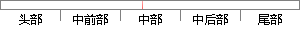

然后使用基于gensim的Word2Vec模块训练词向量。
片段位置图

相似结果|
相似片段 1：检索输出2G多语料分词word2vec训练问答对集词向量加入语义模型修正检索返回答案问答对集索引库更新历史库 结束是否 图4-4 问句匹配流程图 4.3.2 基于百度地图的位置模块 使用百度地图
相似片段 2：word2vec训练得到词向量模型5基于语义特征的原子聚类扩展实现6可视化系统。下面分别对系统中的重要模块进行介绍。整个系统的设计和存储均在基于学术搜索引擎的同名判别算法研究与实现hadoop平台下实现
相似片段 3：；接着使用 ｗｏｒｄ２ｖｅｃ 为试题和知识点文本中的词生成词向量［７-８］，再由词向量组合得到试题和知识点文本向量； 然后基于余弦公式求得试题向量与知识点向量间的余弦距离，使用余弦距离来表示试题文本
|
※ 片段修改建议 ※
近似词参考：- 使用：利用
- 训练：练习
系统自动生成语句：然后利用基于gensim的Word2Vec模块练习词向量。
注：本片段修改建议为系统自动生成，仅供参考。